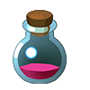
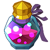
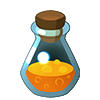
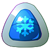

Medicine items are used in and out of battle to restore health or stamina, revive, or cure a status effect of a Nexomon. There are 22 medicine items.
- Potion: Restores 40 HP.
- Super Potion: Restores 80 HP.
- Ultra Potion: Restores 120 HP.
- Max Potion: Restores 200 HP.
- Ether: Restores 60 stamina.
- Super Ether: Restores 100 stamina.
- Ultra Ether: Restores 150 stamina.
- Max Ether: Restores 200 stamina.
- Elixir: Restores both 50 HP and 50 stamina. 
- Super Elixir: Restores both 90 HP and 90 stamina.
- Ultra Elixir: Restores both 140 HP and 140 stamina.
- Max Elixir: Restores both 200 HP and 200 stamina. 
- Revive: Restores a fainted Nexomon along with 50 HP. 
- Super Revive: Restores a fainted Nexomon along with 80 HP.
- Ultra Revive: Restores a fainted Nexomon along with 120 HP.
- Anti Burn: Cures the "BURNING" status effect on a Nexomon!
- Anti Paralyze: Cures the "PARALYZED" status effect on a Nexomon!
- Anti Poison: Cures the "POISONED" status effect on a Nexomon!
- Anti Freeze: Cures the "FROZEN" status effect on a Nexomon! 
- Anti Sleep: Cures the "ASLEEP" status effect on a Nexomon!
- Anti Confusion: Cures the "CONFUSED" status effect on a Nexomon!
- Anti Bind: Cures the "BOUND" status effect on a Nexomon!


 A perfect Nexotrap that can capture any Nexomon no matter what!
A perfect Nexotrap that can capture any Nexomon no matter what! A Nexotrap designed to capture Fire-type Nexomon!
A Nexotrap designed to capture Fire-type Nexomon! A Nexotrap designed to capture Plant-type Nexomon!
A Nexotrap designed to capture Plant-type Nexomon!